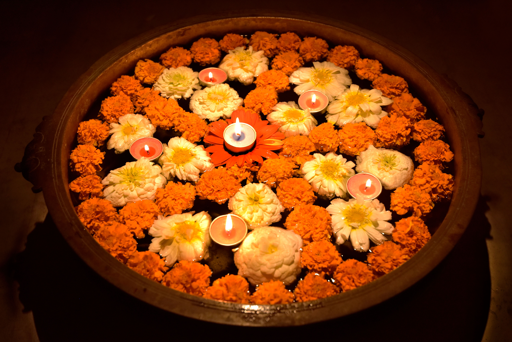
Festive collectionsFor the moments we celebrate.
Seasonal inspiration with room for the distinct traditions, colours and meanings of each occasion.
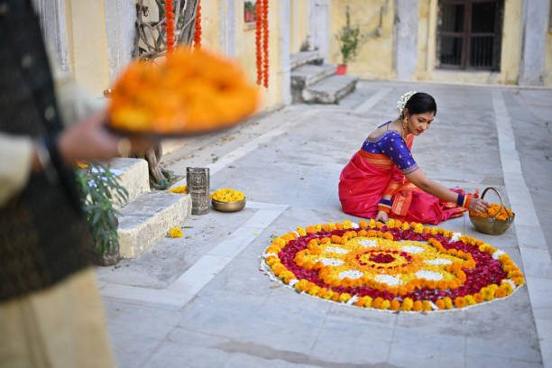
Diwali
Floral and diya-inspired details for a thoughtful celebration of light.
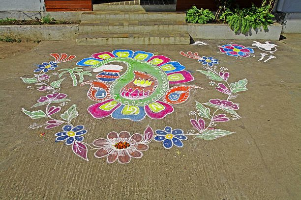
Pongal
Kolam-inspired entrance patterns for the Tamil harvest celebration.
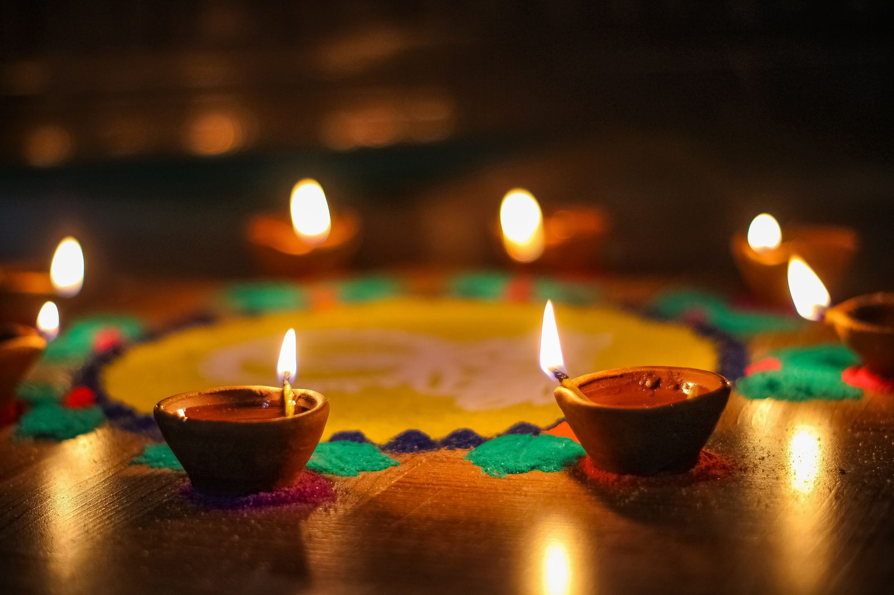
Navratri
Layered geometric motifs and colourful arrangements for festive spaces.
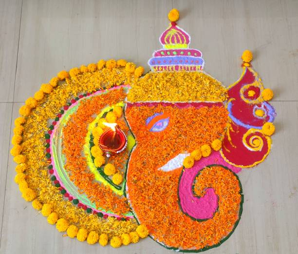
Ganesh Chaturthi
Explore meaningful devotional motifs with care for their placement and context.
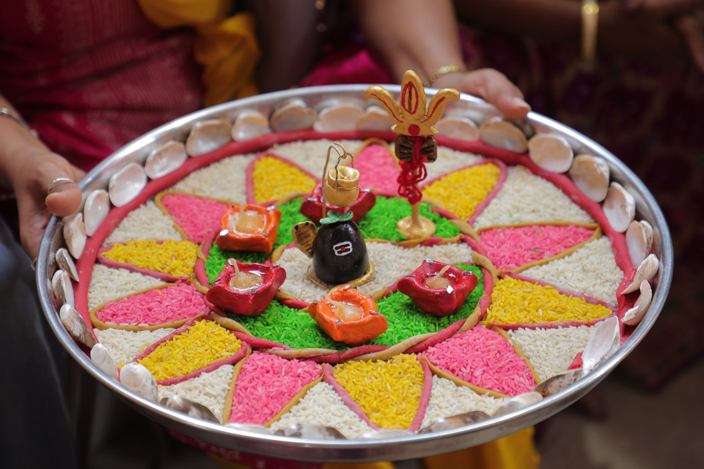
Onam
Flower-petal pookalam inspiration. Pookalam is a floral arrangement, rather than a powder stencil tradition.
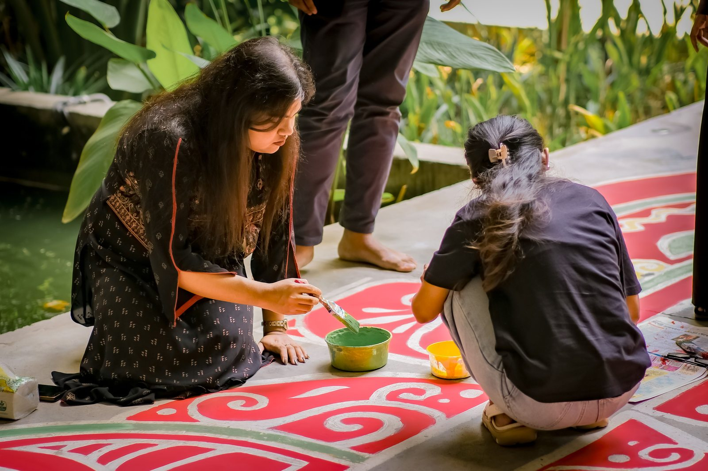
Tamil New Year
A fresh entrance and a considered kolam to welcome the new year.
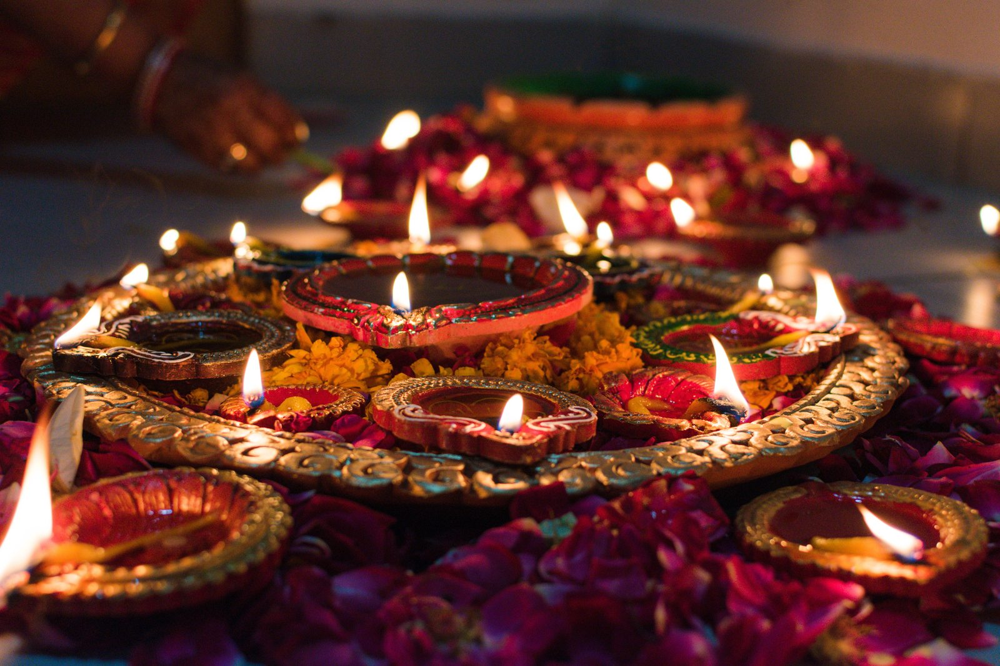
Varalakshmi Vratham
Lotus-inspired decorative accents for the spaces around your pooja area.
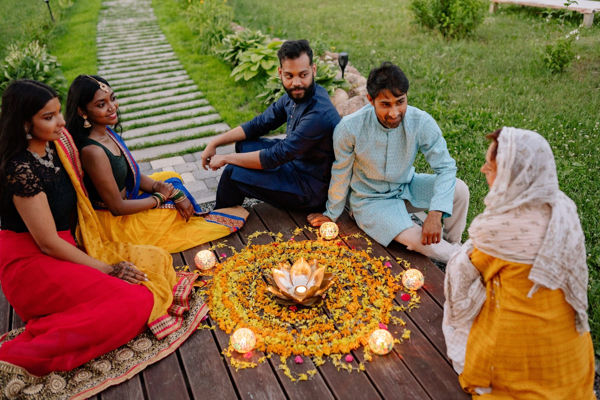
Weddings
Personal names, lotus borders and motifs for your gathering.
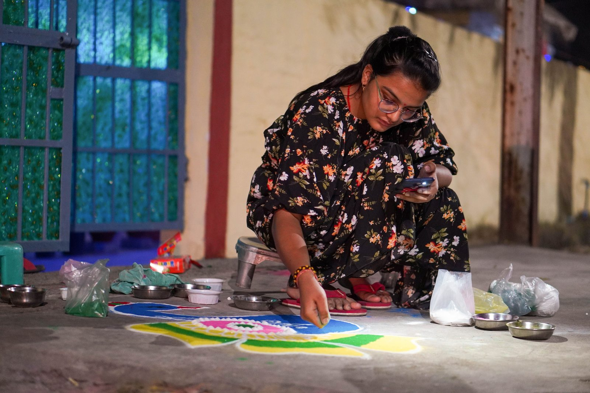
Housewarming
A welcoming pattern at the threshold of a new home.
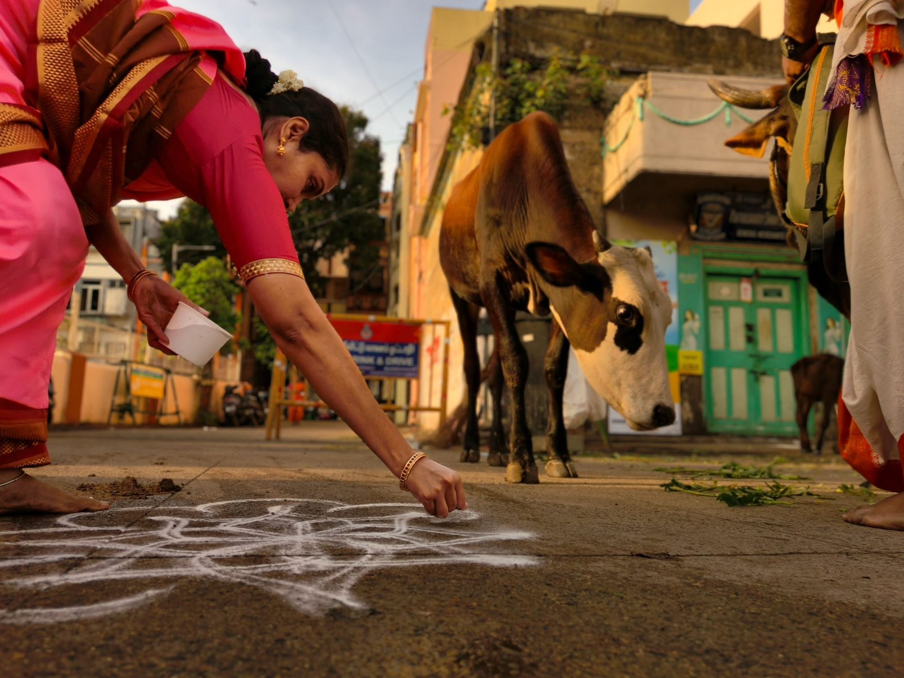
Everyday Entrance Kolam
Simple, repeatable designs to enjoy beyond the festive calendar.
Let the celebration inspire you.
Choose details that fit your own tradition and celebration.
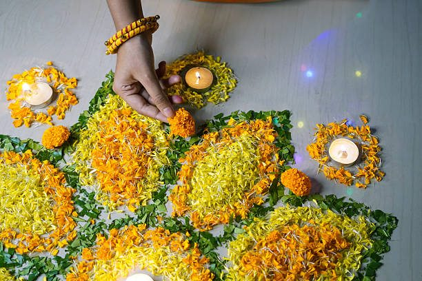
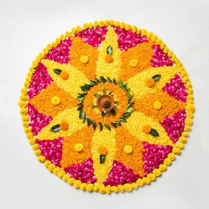
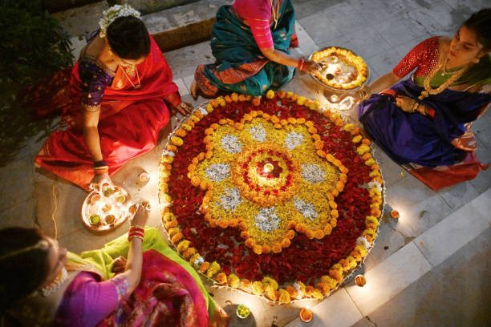
Something special for your celebration?
Tell us about the occasion, space and motifs you have in mind. Begin with a custom design enquiry.
Let’s Create Together